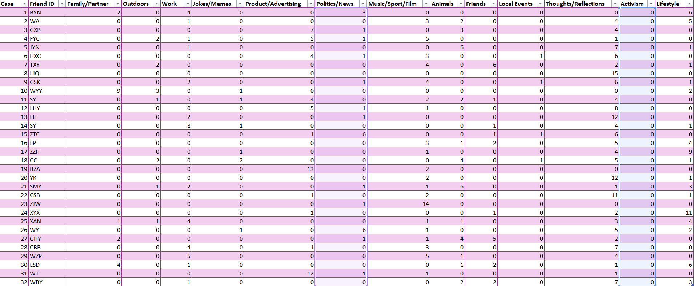
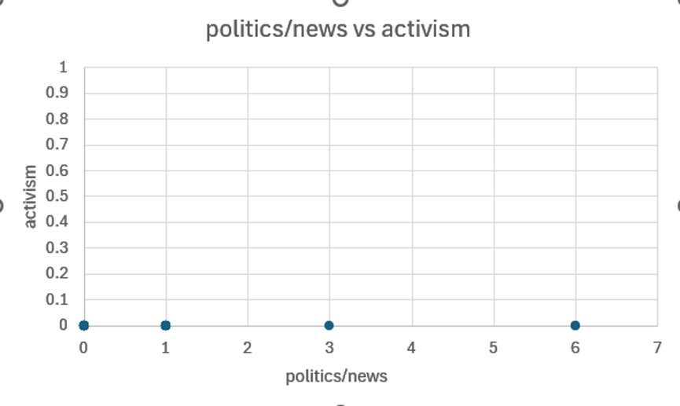

Weekly Reflections

Week 6
Algorithmic Identity and Sumpter’s Counting Method
During this week's workshop, we discovered through practical exercises some clues about how algorithms shape our digital identities. For the post-workshop assignment, we were encouraged to use Sumpter’s counting method to classify posts made by our friends on a social media platform (Weibo) and attempt to understand what kind of algorithmic personas have been constructed for them by algorithms.

Following this method, I completed a dataset based on the classification of my friends’ posts. As shown in the figure, I classified their fifteen most recent posts according to different variables. During this classification process, I encountered significant difficulties, which were very similar to the challenges we faced on Thursday. For example, variables such as “Friends”, “Lifestyle”, and “Outdoor” often appeared within the same post. A collection of photographs might show someone travelling with friends while participating in outdoor activities. How should this be classified? I think I do not know, and the algorithm certainly does not know either. After all, the algorithm does not know who my friends are or what kind of lives they live. Of course, it will still assign labels to their posts and calculate a rather irresponsible “algorithmic identity”.

By comparing two variables, it may indeed be possible to reveal some seemingly “patterned” forms of repeated performance by users on the platform. For example, SY is a lawyer who records experiences from work on Weibo almost every day. Because the nature of legal work involves constant travelling and frequent overtime, work has become the largest part of life in SY’s world. BYN, meanwhile, is a government employee with a relatively relaxed workload, making it easier to balance work and everyday life. As a result, BYN posts almost equal amounts of family-related content. In addition, people located on the right side of the chart who post more frequently about family and romantic relationships often live in second-tier cities, maintain stable relationships with their partners and family members, and experience relatively little pressure in daily life. Those on the left side, who post less about family and more about work, often live in economically developed metropolitan areas and face greater work-related pressure, leaving less time and energy for their emotional lives.

For example, ZJW posted many photographs of football and basketball matches. Logically, these should be classified under the variable “Sport”. However, ZJW is actually a sports photojournalist, so photographs of sporting events could also be classified as “Work”. Yet because I was supposed to be acting as an “algorithm”, I classified these posts as “Sport”. As a result, ZJW becomes a passionate sports enthusiast. In comparison, WZP is also a sports journalist and frequently posts images from sporting events. However, because WZP's work is different (working in sports broadcasting), many posts contain obvious clues related to work, such as staff credentials or photographs taken from inside broadcasting vehicles during events. This allowed me to classify some of these posts as work-related content. If I were an “algorithm”, I would deliver large numbers of advertisements related to sporting events and sports products to ZJW, because ZJW appears to be a dedicated sports fan. But does ZJW actually love sports in everyday life? That is highly debatable. In reality, ZJW does not participate in any sports at all.

Most people do not discuss political opinions or current affairs on Weibo. ZTC and WY are exceptions. ZTC focuses on LGBTQ+ rights in China and speaks out for queer communities. WY is a disabled primary school teacher who is often angered by the injustices faced by disabled people and women in society. I have not seen posts from either of them for a long time. (Here I am not entirely sure whether this is the result of algorithmic influence, as they have both rarely posted new content since last year.) BYN is another exception. Although discussing politics and news, most of the content consists of reposting policies and official news releases published by the Chinese government (celebrating the achievements of government governance), because as a civil servant, sharing state policies and government news is an important part of the job. XYX publishes a large number of lifestyle-related posts but never discusses politics. As an influencer with nearly four million followers whose content mainly focuses on beauty and fashion, avoiding political discussions on a secondary account is clearly an important decision for maintaining the stable operation of a personal brand.
Weibo’s algorithms are filled with advertisements that emphasise lifestyle: a fashionable new electric vehicle, furniture that makes life more convenient, useful beauty products, newly released mobile games, and AI short-drama platforms that help relieve boredom during daily commuting. However, I have never encountered any political advertising (except for the government publicity articles praising policy achievements mentioned above). In a country without democratic electoral politics, whether genuine political advertising even exists is itself an open question.

The most important comparison is between lifestyle and thoughts. This is because these are the primary ways my friends use Weibo. What frightens me is that those who publish posts categorised as thoughts tend to be under considerable psychological pressure from various aspects of their lives, and some already experience serious mental health issues. By contrast, those who mainly publish lifestyle posts generally appear to enjoy stable and comfortable lives in many respects.
At this point, I would like to summarise my criticisms of Sumpter’s matrix (the way algorithmic identities are constructed):
- Because classification labels are singular, classification itself is highly subjective and struggles to deal with complex texts. (For example, travelling with friends as a form of lifestyle.)
- Algorithms cannot understand the social context behind content, or can only classify content according to the algorithm designers’ understanding of social context. (The sports enthusiast example.)
- Data itself does not represent users’ real lives and can easily overlook individual experiences and emotions. (The proportion of work-related and family-related content appears to be related to city of residence, occupational type, and life pressure. However, these interpretations are based on content users choose to make public rather than their complete lives. Sumpter’s matrix can easily create the impression that online behaviour directly reflects offline life, when in reality social media itself is a curated and performative form of self-presentation.)
- Beyond this, Weibo also demonstrates characteristics of algorithmic identity that are unique to China: the absence of politics and activism.
Throughout this reflection I have summarised many seemingly reasonable “patterns”, but these conclusions are all based on my personal friendship network, my life experiences, and my own views (and biases) about the world.
As a 29-year-old middle-aged adult, my social circle is clearly very different from those of many classmates. My friends are dealing with issues associated with approaching thirty years old, including workplace pressure (overtime, unemployment, intense workplace competition), political oppression (being discriminated against, ignored, or treated unfairly), and family pressures (pressure to marry, raising children, caring for ill relatives and parents). Looking back five or six years ago, the content my friends posted on Weibo was much more focused on exploring the world, aspiring towards idealised campus life, and enjoying the freedom of travelling. Perhaps if I had applied Sumpter’s matrix at that point, my understanding of algorithmically constructed identities would have been very different.
I believe that the power to classify is particularly important within Sumpter’s method. By classifying posts, I identified many patterns according to my own worldview and used these patterns to define my friends’ algorithmic identities. My existing knowledge of them inevitably influenced my interpretations. But what happens when a third party within a black box, lacking embodied emotions, determines the rules for classifying posts? Bias and partial perspectives have never been hidden by algorithms. Instead, they are packaged as a form of neutral analysis. As Theorists Geoffrey Bowker and Susan Leigh Star said, “classification systems are often sites of political and social struggles, but these sites are difficult to approach. Politically and socially charged agendas are often first presented as purely technical and they are difficult even to see.” Within my Weibo friendship network, algorithms and users seem to work together to produce algorithmic identities that are almost entirely lacking in politics and completely devoid of activism. Is that because we do not want to talk about these issues? At least in my own experience, I have written and edited such posts before, and I have seen similar posts on Weibo, yet they quickly disappeared.
Finally, I include a comparison image of politics and activism as a reminder of our hidden sense of powerlessness. We have never been completely unfree. We simply choose to ignore certain things, or they are intentionally hidden from us, because there seems to be no alternative at present, and life must continue moving forward.
